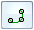
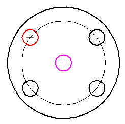
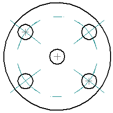
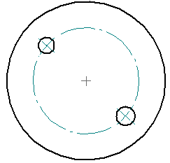
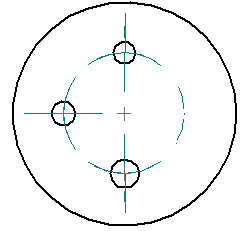

Place a bolt hole circle
You can place a bolt hole circle annotation to define the location of a bolt hole. You can define a partial bolt hole circle using the Trim option.
-
Choose Home tab→Annotation group→Bolt Hole Circle
 .Note:
.Note:In a model, this command is also available on the PMI tab.
-
On the Bolt Hole Circle command bar, select one of the following creation methods:
-
By Center and Radius—Creates a bolt hole circle using a center point and a radial point.
-
By 2 Points—Creates a bolt hole circle using two points to define its diameter.
-
By 3 Points—Creates a bolt hole circle using three nonlinear points to define its circumference.
-
-
(Optional) To create a bolt hole circle that is less than 360 degrees, select the Trim button

on the command bar. -
Depending on the bolt hole creation method you selected, click points to define the bolt hole circle location.
-
(By Center and Radius) Click one circle to specify the center point of the bolt hole circle, and then click a second circle to specify the radius of the bolt hole circle.
Example:
The bolt hole circle is placed so that it is centered around the first point, and it bisects the second circle selected.
Example:
-
(By 2 Points) Click two circles.
The bolt hole circle is placed so that its circumference bisects both of the selected circles. Center marks are placed on both of the selected circles.
Example:
-
(By 3 Points) Click anywhere on three different circles.
The bolt hole circle is drawn through the center points of the selected circles.
Example:
-
-
Do one of the following:
-
If you selected the Trim option and you want to create a partial bolt hole circle, click the arc segments on the bolt hole circle that you want to remove.
-
To skip the Trim step, right-click.
-
To place another bolt hole circle, click the points to define it.
-
Press Esc to exit the command.
-
-
You can drag the round edit handles on a trimmed bolt hole circle segment to adjust its length.

-
You can restore a trimmed bolt hole circle to its full size by selecting the bolt hole circle, and then deselecting the Trim button.
-
When a bolt hole circle annotation becomes detached, you can drag it to a new circle along the bolt hole circle radius area. You also can delete it and then recreate it.
How do I
Automatically create centerlines and center marks in a drawing viewAutomatically remove centerlines and center marks from a drawing view
Place a center mark
Place a centerline midway between two lines
Place a centerline on a slot
Place a center axis on a cylinder or hole feature
Example: Dimension a curved slot
Learn more
Centerlines, center marks, and bolt hole circlesLook up more details
Automatic Centerlines commandAutomatic Centerlines command bar
Centerline and Center Mark Options dialog box
Center Mark command
Center Mark command bar
Centerline command
Centerline command bar
Center Line and Center Mark Properties dialog box
Bolt Hole Circle command
Bolt Hole Circle command bar
Bolt Hole Circle Properties dialog box